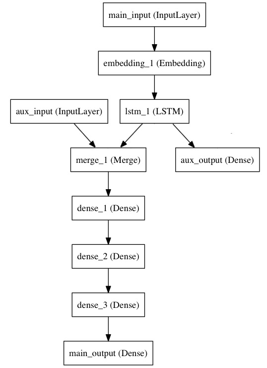

1. Sequential 序贯模型
-
仅适用于单输入、单输出、模型不分叉的情况
-
通过向Sequential中不断add layer达到模型构建的目的，被添加的layer会按顺序自动连接
-
样例：
x = Sequential() x.add(Dense(32, activation='relu', input_dim=100)) x.add(Dropout(0.25)) model = x # 后序就是compile、fit等操作
2. Model式模型
-
可以有多个输入、多个输出，模型结构灵活，需要获取中间输出时常采用这种方式
-
通过函数时编程方式定义模型结构
-
最终定义整个模型的输入和输出
-
样例：代码构建了如图所示的模型
# 模型一： main_input = Input(shape=(100,), dtype='int32', name='main_input') x = Embedding(output_dim=512, input_dim=10000, input_length=100)(main_input) lstm_out = LSTM(32)(x) auxiliary_output = Dense(1, activation='sigmoid', name='aux_output')(lstm_out) # 模型二：组合模型 auxiliary_input = Input(shape=(5,), name='aux_input') # 新加入的一个Input,5维度 x = keras.layers.concatenate([lstm_out, auxiliary_input]) # 组合起来，对应起来 # We stack a deep densely-connected network on top # 组合模型的形式 x = Dense(64, activation='relu')(x) x = Dense(64, activation='relu')(x) x = Dense(64, activation='relu')(x) main_output = Dense(1, activation='sigmoid', name='main_output')(x) #最后，我们定义整个2输入，2输出的模型： model = Model(inputs=[main_input, auxiliary_input], outputs=[main_output, auxiliary_output]) # 后序就是compile、fit等操作